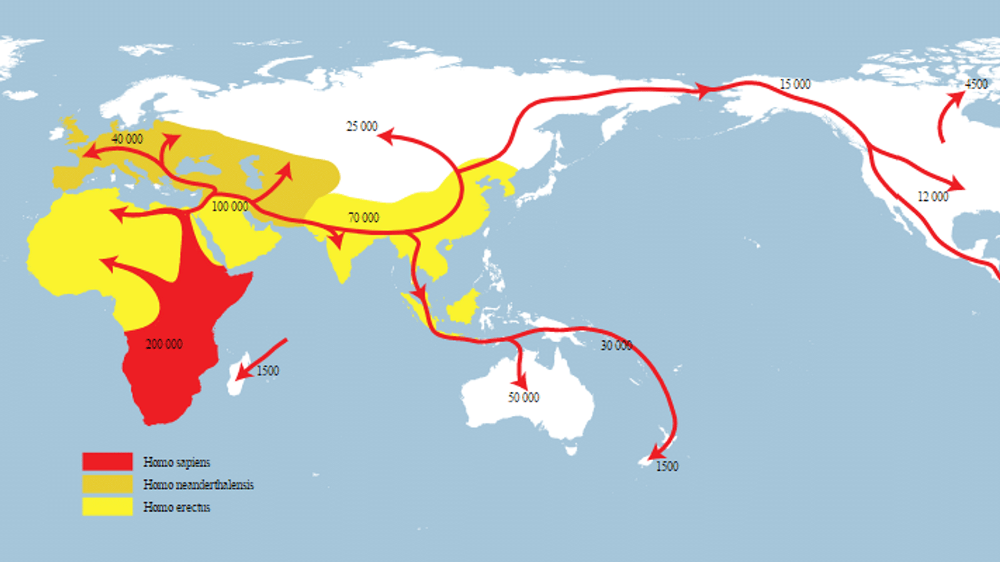

Explore the Journeys of Our Ancestors Across the Globe
Welcome to the early human migration wiki! Here we will explore the exiting journeys made by the early human's migrations from Africa to every corner of the globe.
From what are now harsh deserts of Afica, to the icy lans of the Americas, our ancestors traveled across vast distances populating the globe with our species.
This wiki is designed to guide you through the major migrations events, supported by archaeological findings, genetic studies, and cultural stories passed down over time.
Learn how early humans migrated across the continents, peopled new lands, and left behind them scars which we are still finding today. We trust this journey will help you appreciate the resilience and ingenuity of our ancestors.